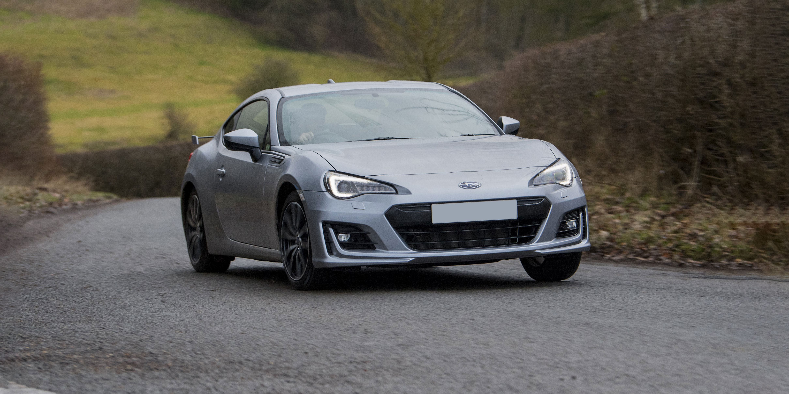
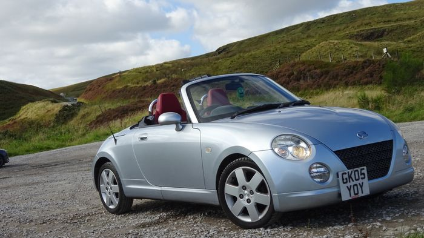
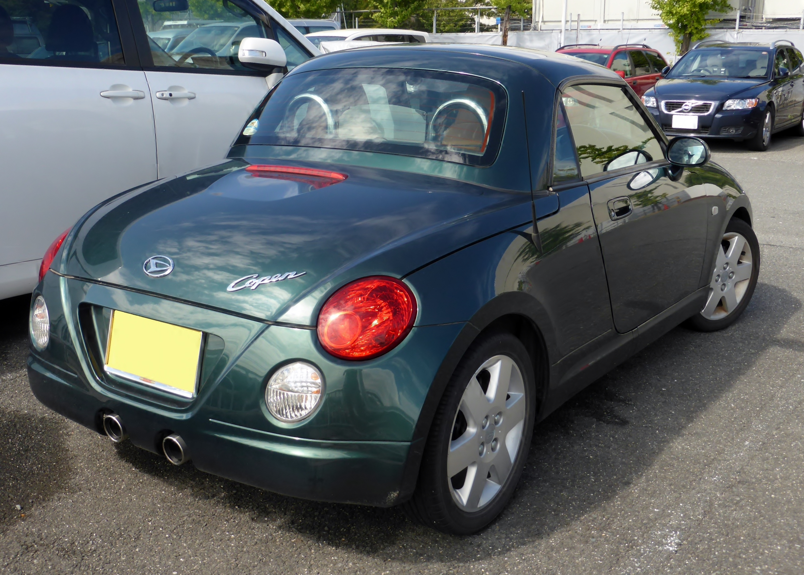

In this section I talk about cars that I like, and maybe I will highlight ones that I wish to purchase in the future.
I think this one is fairly self explanatory. I own one, so of course I am going to like it. If you wish to find out a bit more about my peticular example you can go to the My Car page, conveniently linked here just for you.
You may ask, apart from the fact you own one... why do you like these cars so much? Good question... well, they are incredibly cheap to run, they rev nicely, the gearbox feels great, they are simple to work on and a lot of fun if you get them out onto some twisty roads. A little underpowered I have to say but lots of legal fun.
I think these are brilliant cars, along with the Subaru BRZ. They are from what I am told the same car but with different badges and I don't mind that. This is one of the cars that I definitely want to own in the future. They are built for handling and some people compare them to the Mazda MX-5, seeming as they have roughly the same 0-60 times, and are both built for the twisties. I really like the look of them although I do prefer the Toyota (purely bias based on the badge). They look cool, they (for me) are practical enough and I aspire to own one in the future. They also have a large modified scene (another bonus for me) because I like modifying cars (even if it ruins them, slightly).
Say what you want about me but I adore these cars. Front wheel drive convertible sports cars from Japan's kei class. Absolutely epic. I love the fact they are tiny and have a leccy lid, they have an enormous smile and a dual exit exhaust out the back. They are quirky and different and fun and you wish you had one. I am small and I like small cars. I think these are epic in every way. Personally I would get the 660cc engine rather than that 1.3 litre (because I would love some turbo noises).
 {kind=link}